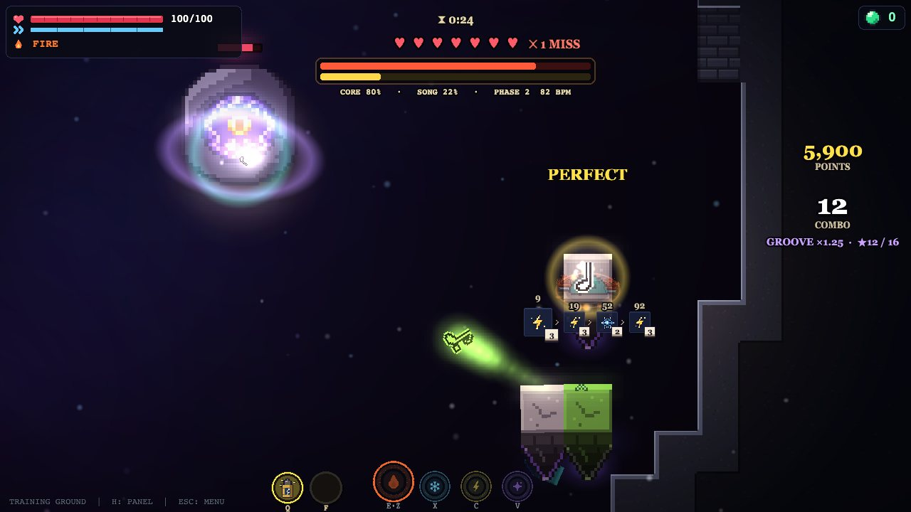
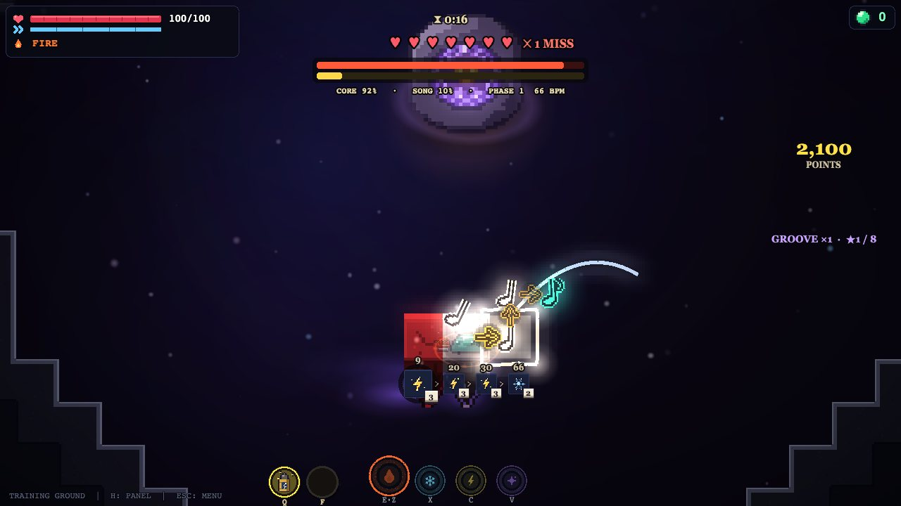
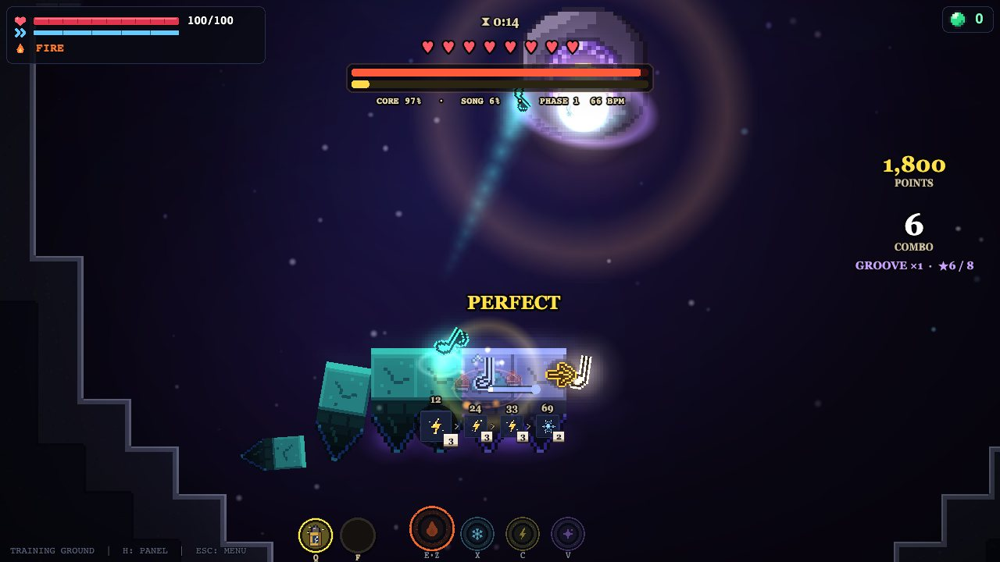
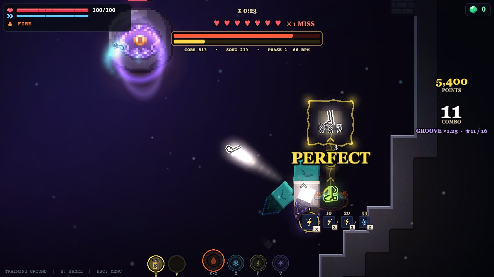
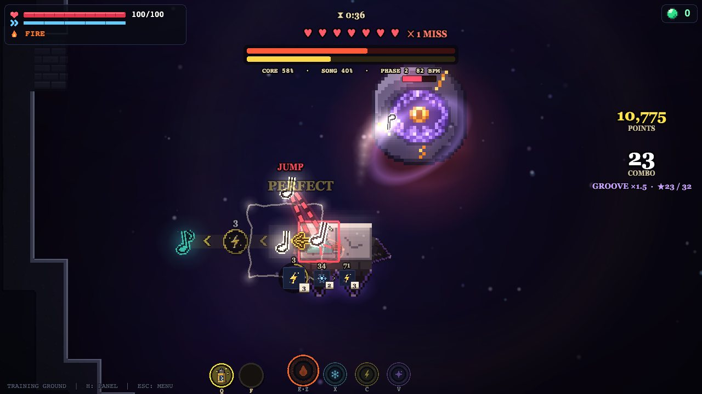
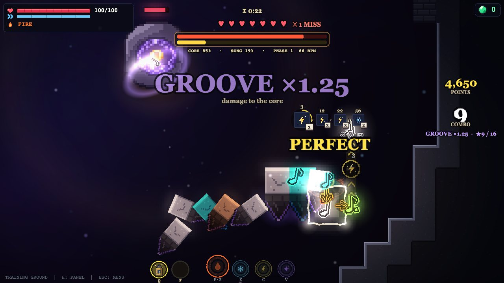
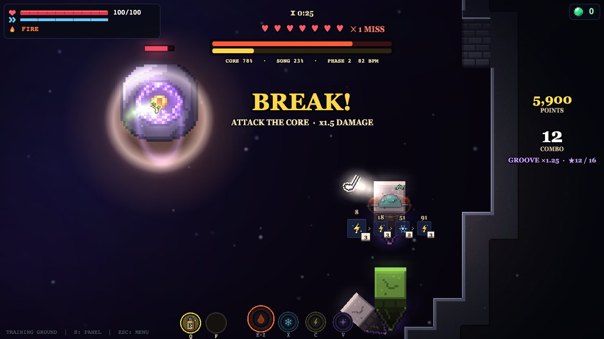
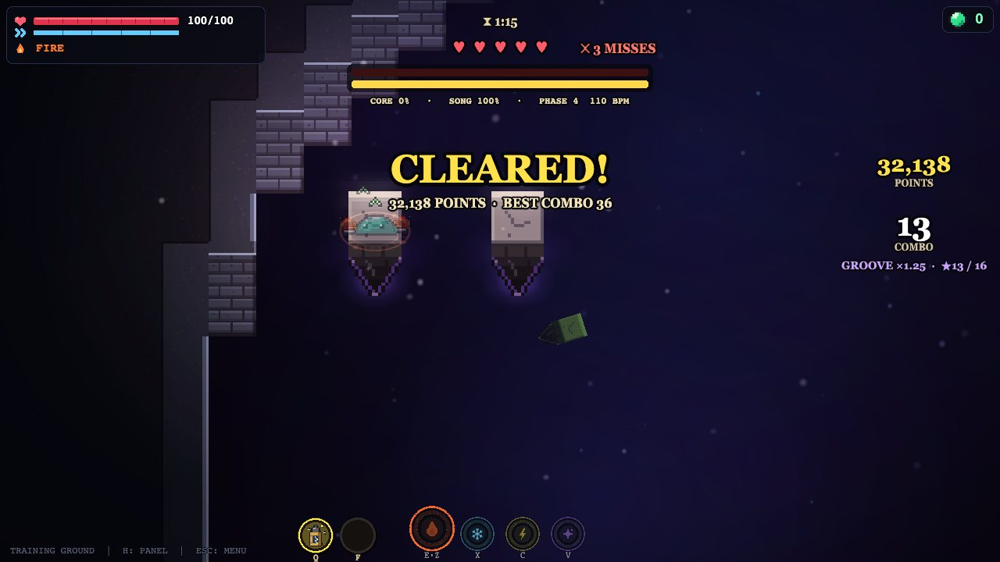
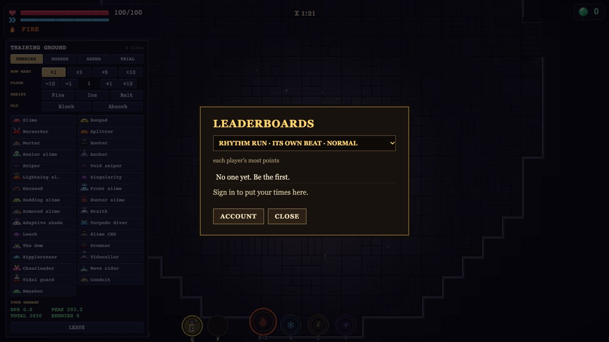
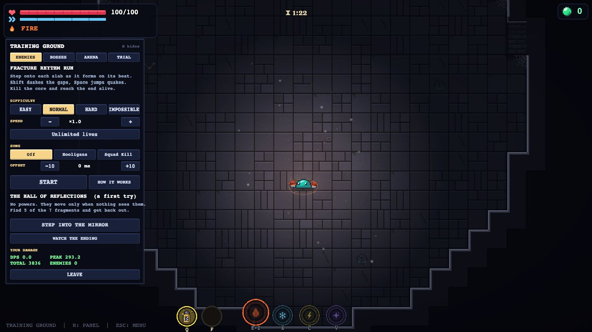

The Fracture Rhythm Run
The floor is gone. The only ground is a route of slabs over the abyss, each one forming exactly on its beat. Land on every one in time, and every note you land hits the core floating in the middle. Shatter it before the song ends, reach the far side alive, and score as many points as you can.
- Starting a run
- Reading the floor
- Grades, combo and groove
- Dashes and hops
- Quakes
- The extras
- Breaks
- Points
- The leaderboards
- Difficulty, speed and songs
- Tips
Starting a run
Go to the Training Ground on the map, press H for its panel and open the TRIAL tab. Pick your settings and press START. The first time, the game shows its own guide; HOW IT WORKS brings it back any time. A four-beat count-in, then GO.

You win if the core is shattered and you reach the last slab alive. You have 5 lives: a fall puts you back on the newest slab.
Reading the floor
There's no note lane: the floor is the score. Before a slab rises, fault lines of light open in the dark round its cell and close in on it, landing on its edges on the beat. A spark runs along a fissure from the slab before it, arriving on the beat too. Over each cell an inked note says how long it lasts (a crotchet, two quavers, a dotted quaver and a semiquaver, a run of semiquavers), so a stretch of slabs reads like a bar of music.

Step onto each slab as it forms. You may land a little early (see the table below), never late. The slab you're on crumbles a moment after the next one forms, so keep moving.
Grades, combo and groove
Every landing is graded by how close to its beat you land.
| Difficulty | PERFECT within | GOOD within | You may land early by |
|---|---|---|---|
| Easy | 115 ms | 230 ms | 300 ms |
| Normal | 100 ms | 200 ms | 260 ms |
| Hard | 85 ms | 170 ms | 220 ms |
| Impossible | 85 ms | 170 ms | 220 ms |

Dashes and hops
Some gaps are too wide to step. A few beats early, an amber arrow runs from the slab you'll leave to the one you'll land on, with the badge of the element it needs. Dash with Shift: lightning dashes 3 tiles, fire 4, ice 6, and the wrong element falls short or long. Cosmic's is an aimed hop, drawn as a curved arrow. The NEXT DASHES row under you shows the elements coming up, each with the key that switches to it, so you can switch in time.

Quakes
When the slab you're standing on cracks red from the middle, a quake is coming. On its beat the slab tears apart, then mends a moment later. Jump with Space on the beat and you come down on it whole. Jump too early and you land before it's mended.

The extras
None of these is needed to clear a run (except the trill), but they hurt the core and score big.

Breaks
Between phases comes a BREAK: a few beats with no notes, when the core takes 1.5 times the damage. Throw every weapon you have at it. Then a count-in, and the next phase, faster (on the run's own beat: 66, 82, 96, then 110 beats a minute) and busier.

Points
Every run scores points, shown on the right during the run and in the banner at the end.
| For | Points |
|---|---|
| A PERFECT / GOOD / BAD landing | 300 / 150 / 50 |
| On top, for a dash | 100 |
| On top, for a cosmic hop | 150 |
| On top, a dash on a different element from your last one | 150 |
| On top, a quake jumped | 100 |
| A hold carried home (SAVED) | 100 |
| An accent | 250 |
| A mordent | 300 |
| A trill | 500 |
| A glissando, perfect / not | 1000 / 500 |
| At the end: the core shattered | 3000 |
| At the end: the far side reached | 1000 |
Everything above (but the end bonuses) is multiplied by your groove at that moment. Then all of it is multiplied by the difficulty (Easy ×0.5, Normal ×1, Hard ×1.5, Impossible ×2.5) and by your speed (×0.5 to ×1.5). A BAD landing gets no dash, hop or quake bonus.

The leaderboards
Signed in (account, in the map's corner), your points go up when a run ends, and the banner tells you your place. Every song and difficulty is its own board (the run's own beat counts as a song), and only your best counts. Open leaderboards on the map and pick a board to see it.
A run with unlimited lives is practice: it scores, but it isn't posted.

Difficulty, speed and songs

Tips
- Watch the fault lines, not your slime. They land on the beat; move when they do.
- Read the NEXT DASHES row early and switch elements a beat ahead, not on the gap.
- When your slab cracks red, wait for the beat before you jump.
- Protect the groove: a BAD costs more than a skipped extra. Take accents and mordents only when you're comfortable.
- Save your strongest attacks for the breaks: everything does half again as much.
- Chasing points: switching elements between dashes and keeping the groove high are worth more than anything else.
The Rhythm Run guide. Numbers are for the current version of the game.